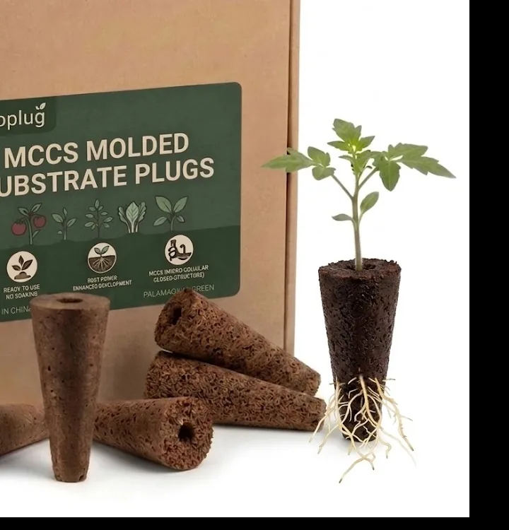
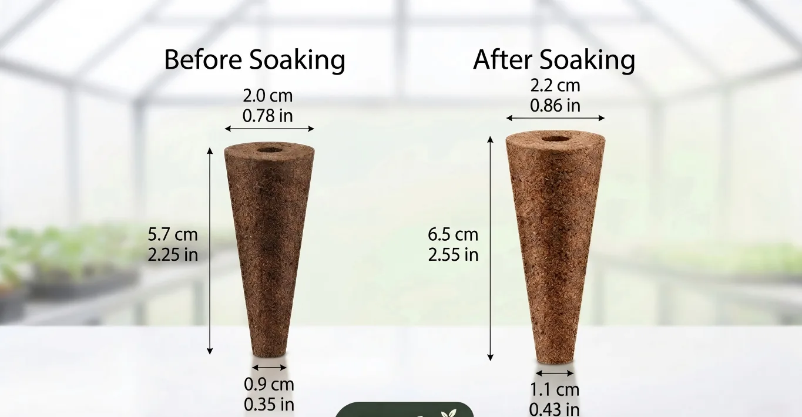
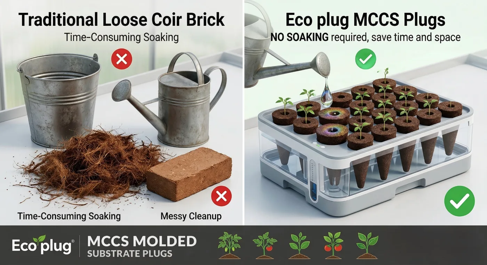
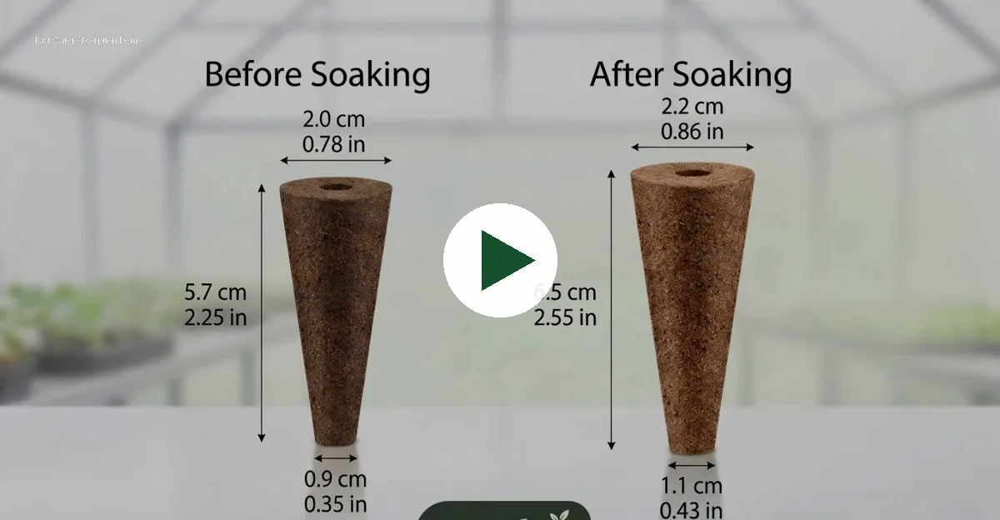

The 57–65 mm height provides a deeper plug body than many common pellet formats, helping buyers create a stronger visual and functional difference in seed starter kits.
MCCS tall tapered substrate plugs · OEM / private label ready
Tall Tapered Molded Substrate Plugs for Seed Starting, Cuttings & Private Label Growing Kits
MCCS is a net-free molded plant fiber plug designed for clean handling, compact export, retail seed starter kits and commercial propagation programs. Custom packaging, batch testing and FBA/export support available for overseas buyers.
20 → 22 mmTop diameter after hydration
57 → 65 mmTall tapered root zone
Net-FreeMolded plug, no mesh bag

Designed for clean propagation
Tall tapered structure, clean handling and private-label packaging support for professional growing and retail kits.
Seed Starter KitsHydroponic NurseriesPrivate Label BrandsGarden CentersAmazon / Shopify SellersBulk Export Buyers
Product Specifications
Tall Tapered Plug Structure with Custom Batch Testing
MCCS plugs are designed for buyers who need a compact, net-free and private-label ready growing media product. Exact pH, EC, moisture and formula values can be confirmed by SKU, batch and buyer requirement.

| Item | Reference / Support |
|---|---|
| Product type | MCCS tall tapered molded substrate plug / plant fiber growing plug |
| Material | Molded plant fiber substrate, net-free structure |
| Shape | Tall tapered cone plug; cylinder, square or custom tray-compatible formats can be discussed |
| Dry size reference | Top Ø 20 mm, height 57 mm, bottom Ø 9 mm |
| Hydrated size reference | Top Ø 22 mm, height 65 mm, bottom Ø 11 mm |
| pH / EC | Customizable and testable by SKU, batch and buyer requirement |
| Hydration behavior | Designed for easy hydration before use, without loose coir soaking, mixing or messy cleanup |
| Packaging | Bulk carton, retail box, seed starter kit pack, refill pack, private-label carton label |
| Applications | Seed starting, cuttings, hydroponic nurseries, retail growing kits and distributor refill packs |
| Export support | Invoice, packing list, carton label, FBA label, shipping coordination and route-specific document support |
Why Choose MCCS
A Net-Free Tapered Plug Alternative for Modern Growing Kits
Unlike common peat pellets, coir plugs and rockwool cubes, MCCS uses a tall tapered molded structure designed for clean handling, compact packing and private-label growing programs.
No mesh bag is required. The pre-molded structure helps reduce packaging complexity and creates a cleaner experience for retail users and kit buyers.
Dry plugs are compact and easy to carton-pack, making them suitable for distributors, Amazon sellers, Shopify brands and seasonal gardening promotions.
Retail boxes, carton labels, instruction cards, barcodes and kit combinations can be prepared for overseas private-label buyers.
pH, EC, moisture and formula-related values can be checked according to buyer requirements before bulk cooperation.
MCCS can be positioned between low-cost peat pellets and premium coir or rockwool plugs, depending on packaging, quantity and market channel.
Buyer Comparison
MCCS vs. Peat Pellets, Coir Plugs and Rockwool Plugs
Public comparison should focus on product types instead of brand names. This helps buyers understand where MCCS fits without creating trademark or data-dispute risks.
| Parameter | Peat Pellet | Coir Plug | Rockwool Plug | MCCS Plug |
|---|---|---|---|---|
| Material | Peat moss | Coco coir | Mineral wool | Molded plant fiber substrate |
| Common size | 32 mm / 45 mm | 25–42 mm | Approx. 36 × 40 mm | 20 mm top diameter, 57 mm height dry reference |
| After hydration | Expands to approx. 35–50 mm | Usually expands around 10–15% | No expansion | Approx. 22 mm top diameter, 65 mm height |
| Shape | Cylindrical pellet | Round plug | Cube or round plug | Tall tapered cone |
| Wrapper | Mesh or net wrap | Paper / fiber wrap depending on SKU | No wrap | Net-free molded structure |
| Handling | Easy but usually wrapper-based | Clean, but premium cost | Professional but less beginner-friendly | Clean, compact and retail-kit friendly |
| pH / EC | Usually adjusted by supplier | Low EC options available | May need conditioning | Can be tested and customized by batch |
| Main advantage | Low cost and mature market | Organic / coir positioning | Professional hydroponic use | Tapered design, net-free, compact export, private label ready |
| Best fit | Basic seed starting | Organic growing channels | Commercial hydroponics | Retail kits, FBA, nurseries, distributors and private-label brands |
Price Positioning
MCCS can be positioned between low-cost peat pellets and premium coir / rockwool plugs. It is suitable for buyers who need custom packaging, compact export volume, private-label flexibility and a differentiated tapered plug design.
MCCS Molded Substrate Plugs
- Tall tapered design for product differentiation
- Net-free molded structure, no mesh bag required
- Compact dry volume for export and FBA storage
- Private-label retail packaging available
- pH / EC / moisture testing can be arranged by batch
Loose Coir / Soil Mix
- Requires soaking, mixing and cleanup
- More loose particles during operation
- Less consistent portion control for retail users
- Higher packaging mess risk
- Less suitable for compact kit positioning
Rockwool
- Professional hydroponic market fit
- May require pH conditioning by growers
- Mineral fiber handling can concern retail users
- Less natural positioning for consumer kits
- Higher education barrier for beginners

Application Scenarios
For Retail Kits, Nurseries, Hydroponics and Distributors
MCCS is suitable for buyers who need a differentiated growing media plug for retail packaging, clean propagation, hydroponic starting and recurring wholesale programs.
Suitable for retail boxes, refill packs, tray bundles and beginner growing kits sold through Amazon, Shopify, garden stores and seasonal promotions.
For seed starting and transplant preparation in hydroponic growing systems. pH, EC and moisture values can be checked according to buyer requirements.
Designed for standardized sowing, cutting propagation and cleaner handling in nursery operations, agricultural bases and greenhouse programs.
Bulk carton, retail box and private-label SKU combinations can be prepared for wholesale distribution and local gardening channels.
Products & Packaging
Bulk Carton, Retail Box and Private Label Options

Conical Propagation Plugs
Efficient carton packing for distributors and commercial growers.
View product page →
Retail Box Packaging
Suitable for private-label retail channels and sample kits.

E-commerce Listing Support
Support SKU content, image assets and packaging confirmation.
Supply Chain Capability
From Sample Approval to Bulk Shipment
We support recurring private-label programs with SKU confirmation, carton specification, packaging proof and shipment planning.
1. Sample & formula confirmation
Confirm plug type, tray fit, pH/EC target and packaging.
2. Packaging proof
Retail box, carton label, barcode, FBA label and instruction card support.
3. Bulk production scheduling
Shipment window confirmed after sample approval and deposit.
4. Export & logistics coordination
FOB, CIF, DDP or FBA direct shipment options can be evaluated.
Export & FBA Support
Documents, Labels and Shipping Coordination
Guangzhou Chengfeng Trading Co., Ltd. can act as the export-facing partner for inquiries, documents and repeat orders.
FOB / CIF / DDP discussion
Quotation by destination port, carton volume and shipping route.
Amazon FBA preparation
FBA carton labels, SKU labels and shipment planning support.
Clearance documents
Invoice, packing list, phytosanitary or fumigation certificate when required.
Private-label protection
Brand, website and customer workflow can be controlled by your company.
Compliance & Trust
SGS SVHC Screening and Export Document Readiness
For overseas buyers, trust is built by clear documents, batch information and transparent communication. Public pages can show summarized proof, while sensitive signed documents can be shared privately after buyer qualification.
SGS SVHC Screening
SVHC screening document available for buyer compliance review. Detailed report can be shared after buyer qualification.
Batch Testing Support
pH, EC, moisture and other SKU-related values can be checked according to buyer requirement before bulk cooperation.
Export Documents
Commercial invoice, packing list, carton labels and route-specific document coordination can be discussed according to destination market.
Private Label Protection
Brand artwork, packaging files, customer information and repeat-order workflow can be managed carefully for private-label buyers.
Visual Proof
Hydration Demo, Root Growth and Trial Feedback
Add real hydration videos, root close-up photos and planting trial feedback here. For professional buyers, real test visuals can be more persuasive than general product claims.

Replace with real video / GIFFAQ
Common Questions from Overseas Buyers
What is the MOQ?
MOQ depends on plug size, packaging and label requirements. Sample orders are supported before bulk production.
Can you provide private-label packaging?
Yes. Retail box, carton label, instruction card, barcode and FBA label support can be arranged.
Can you support Amazon FBA?
We can support FBA carton labels, SKU labels and packaging requirements.
Can you provide pH / EC data?
Testing can be arranged according to SKU and buyer requirements.
What clearance documents can be provided?
Commercial invoice and packing list are standard. Phytosanitary or fumigation certificate can be coordinated when required.
Can I download the product catalog?
Submit company information in the contact form and request the latest catalog and SKU list.
Start Your Project
Request Sample, OEM Packaging or Export Quote
Tell us your target market, plug size, packaging format, estimated quantity and shipping destination. We will suggest suitable SKUs, packaging options and quotation plans.
Email: liuchengc88@gmail.com
Company: Guangzhou Chengfeng Trading Co., Ltd.
Main Product: MCCS tall tapered molded substrate plugs